Тимур Файз
Data Engineer | Researcher
Инженер-исследователь. Сочетаю фундаментальную базу алгоритмов с современными практиками Big Data (EtLT).
🛠 Технический Арсенал
🎓 Академический путь
Моя образовательная траектория включает углубленную подготовку в двух ведущих вузах.
МФТИ (Московский физико-технический институт)
Фундаментальная информатика | 4 семестра
Глубокое погружение в архитектуру ЭВМ, низкоуровневое программирование и математический анализ.
📸 Атмосфера обучения:
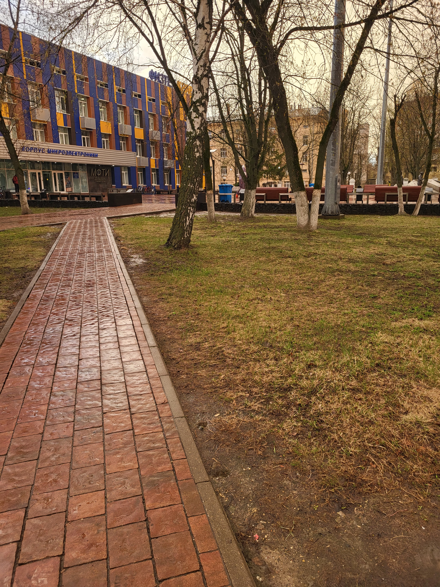
.jpg)
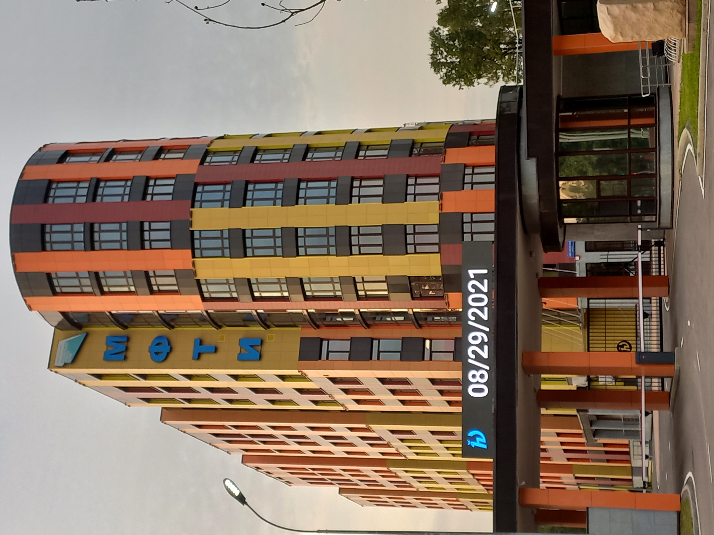
.jpg)
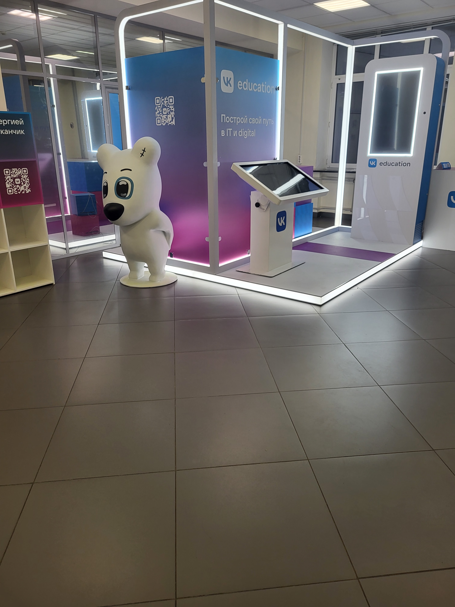
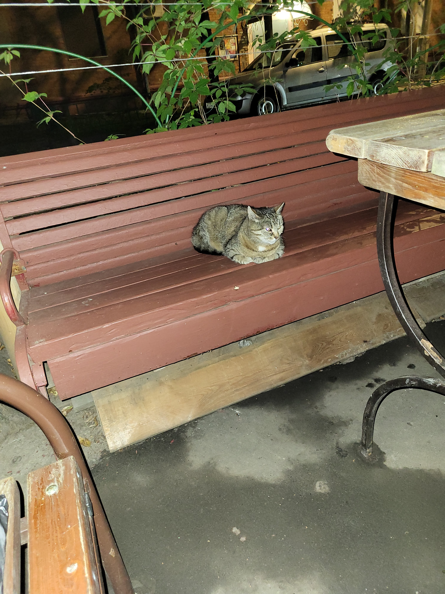
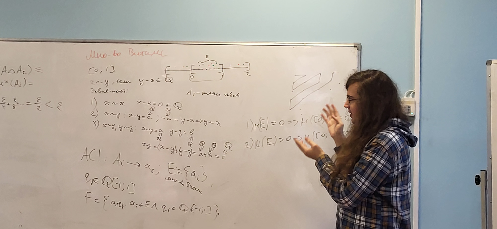
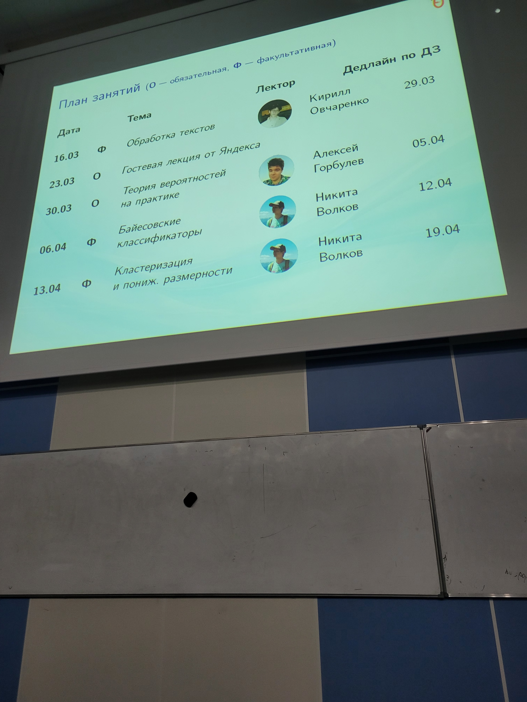
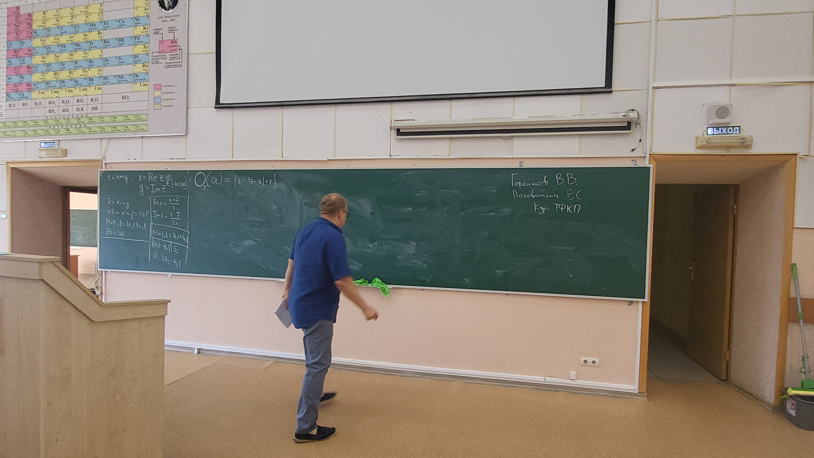
Санкт-Петербургский Государственный Университет (СПбГУ)
Прикладная математика, программирование и ИИ | Перевод
Специализация на анализе данных, распределенных системах и искусственном интеллекте.
📸 Учебный процесс:
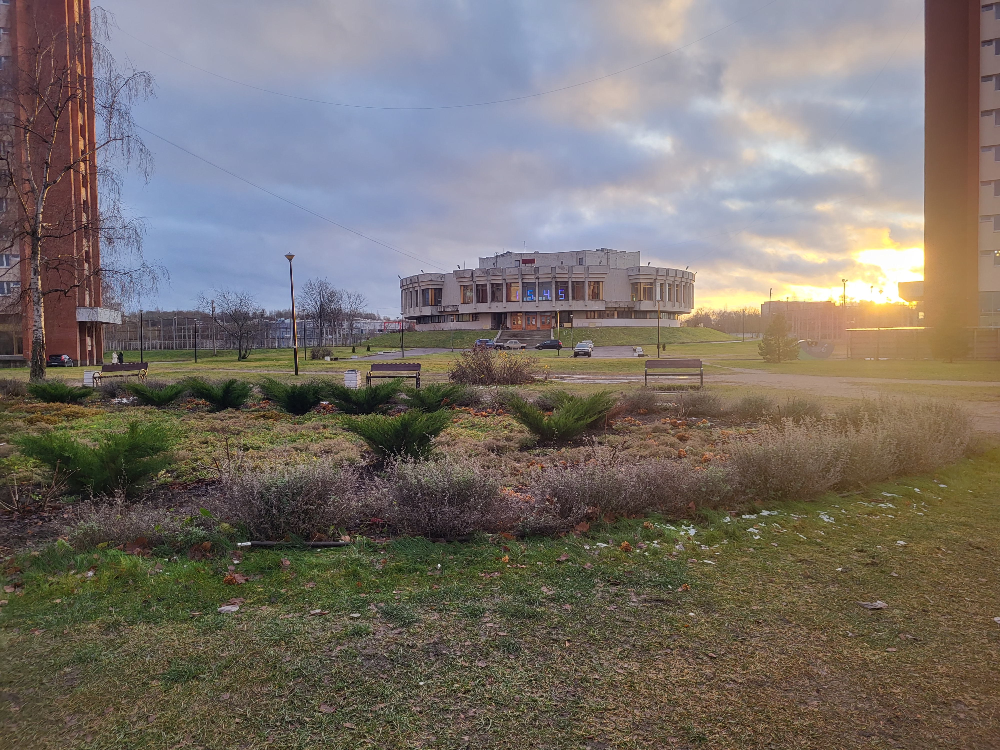
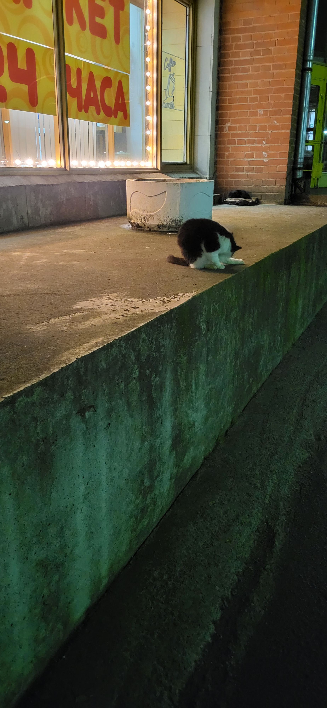
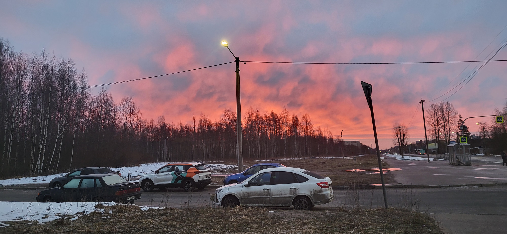
🏛 Проект: Визуализация Алгоритмов
C++ • SFML • Patterns
Самостоятельный проект в период изучения алгоритмов.
Вместо стандартного решения задач, я разработал графический движок для визуализации работы алгоритма Дейкстры.
Это позволило "увидеть" математику.
📄 Детали реализации (Архитектура)
Использованы поведенческие паттерны проектирования для гибкой смены алгоритмов поиска пути без переписывания кода визуализации. Реализована работа с графами любой сложности.
📸 Демонстрация работы:
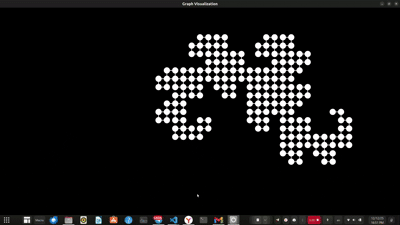

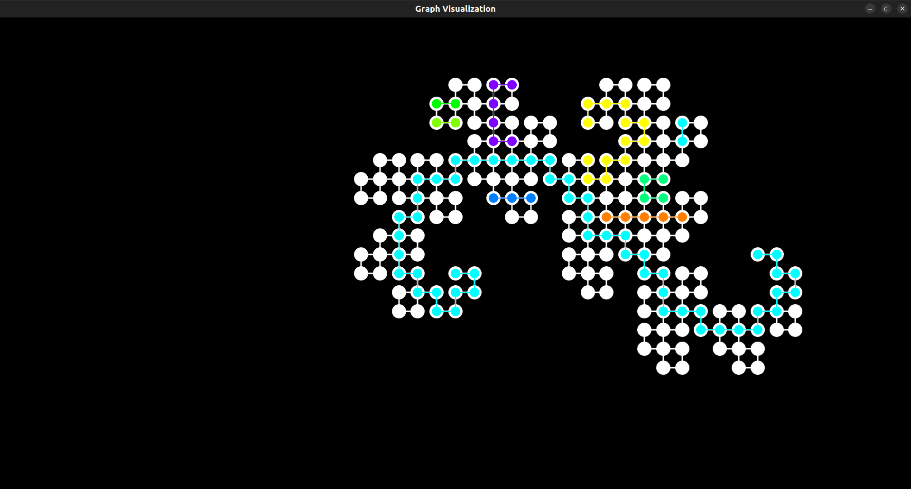
📑 Курсовая работа №1
Theory • Research • Grade: A
Тема: "Сравнительные характеристики ETL и ELT при обработке больших данных".
Фундаментальное исследование подходов к обработке данных. Работа была высоко оценена комиссией СПбГУ (Оценка: Отлично/A).
📄 Аннотация работы
Проведен систематический анализ архитектурных паттернов. Обоснована эффективность гибридных подходов в современных облачных средах. Работа послужила теоретической базой для проекта FinBest.
🚀 Проект: FinBest
EtLT • Airflow • Spark
Практическая реализация Курсовой работы №2.
Полноценный EtLT-конвейер для финтех-стартапа. Проект решает реальные бизнес-задачи: соблюдение ФЗ-152 (маскирование) и ФЗ-115 (поиск мошенников через графы).
📄 Описание из Курсовой работы (Цель и Задачи)
Цель: Продемонстрировать практическую реализацию гибридного подхода EtLT на российских облачных платформах.
Реализация: Разработан пайплайн, где персональные данные обезличиваются до загрузки в облако, а аналитика проводится внутри DWH с помощью Spark и dbt.
📸 Галерея реализации (Airflow, Superset, Архитектура):


🕸 Интерактивный граф (Pyvis)
Результат работы алгоритма кластеризации клиентов. Узлы можно перетаскивать.
📓 Открыть Ad-Hoc Анализ (Jupyter Notebook)
© 2025 Тимур Файз